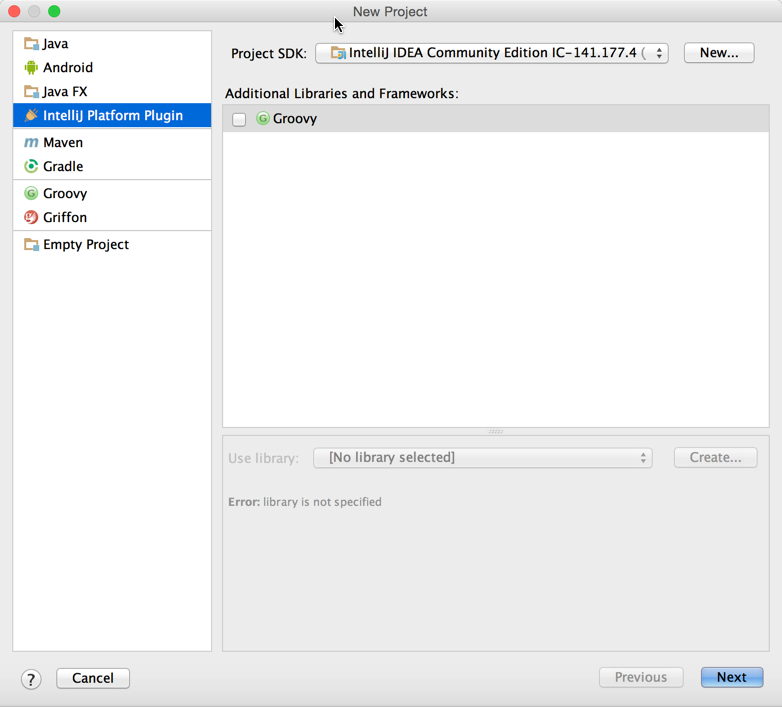
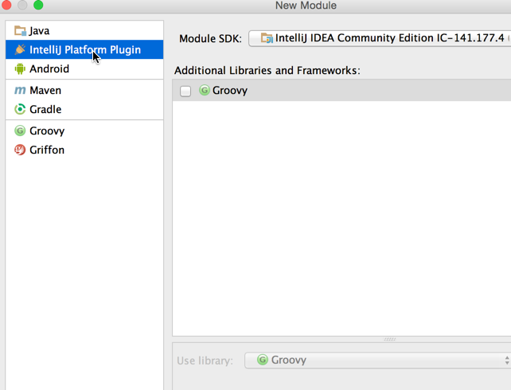
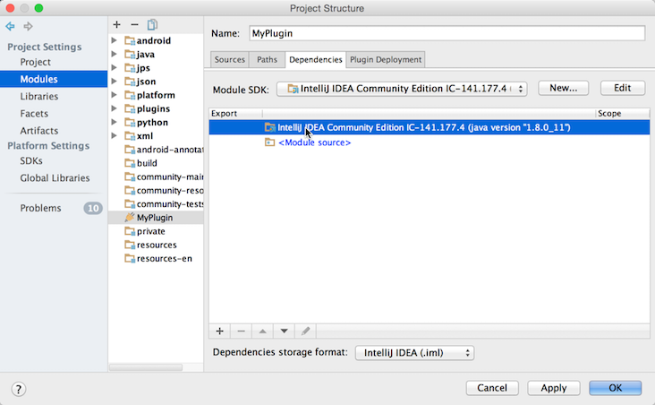

Creating a Plugin Project
This section explains how you can create a new plugin project from scratch using the New Project wizard. Optionally, you can import an existing project or import a project from external models. You can also add a new plugin module to an existing IntelliJ Platform project. For more information, refer to the IntelliJ IDEA Web Help.
To Create an IntelliJ Platform Plugin Project:
-
On the main menu, choose File | New | Project. The New Project wizard starts.

- Set IntelliJ Platform Plugin project type
- Click Next
- Set desired project name
- Click Finish to generate project structure files
- Go to File | Project Structure to customize project settings if required
To Create an IntelliJ Platform Plugin Module
-
Select File | New | Module and choose the IntelliJ Platform Plugin module type

-
Enter your desired plugin name.
-
Go to File | Project Structure and select the newly created IntelliJ Platform SDK as the default SDK for the plugin module:

Adding Code to the Project
Before running the new project add some code to provide simple functionality. See the Creating Actions tutorial for step-by-step instructions for adding a menu action.